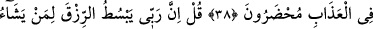

SİZİ
HUZÛRUMUZA YAKLAŞTIRACAK
OLAN ŞEY
37. Sizi huzurumuza yaklaştıracak olan ne mallarınızdır ne de evlâtlarınız. Îman
edip iyi amelde bulunanlar müstesna; onlara yaptıklarının kat kat fazlası mükâfat
vardır. Onlar (cennet) odalarında güven içindedirler.
38. Âyetlerimizi boşa çıkarmaya çalışanlara gelince, onlar da azapla yüz yüze
bırakılacaklardır.
39. De ki: Rabbim, kullarından dilediğine bol rızık verir ve (dilediğinden de)
kısar. Siz hayra ne harcarsanız, Allah onun yerine başkasını verir. O, rızık
verenlerin en hayırlısıdır.
40. O gün Allah, onların hepsini toplayacak; sonra meleklere: Size tapanlar
bunlar mıydı? diyecek.